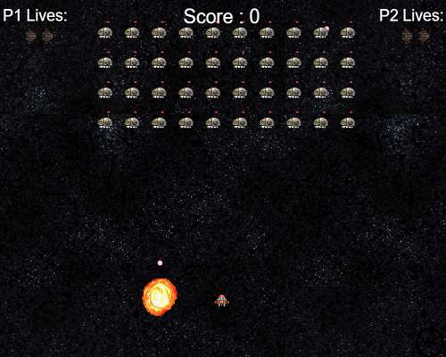

Game Design
 The game has been to designed to be an extension of the classic game "Space Invaders" like the one seen above. It goes further by having a variety of enemies that can provide the player with abilities like in "Megaman". These aspects are explored in other sections so this page will only consist of diagrams that give a visual representation of the game's functionality.
State Diagram
 The player can pause the game while playing the game; but can also go back to the start at anypoint by clicking a button on the bottom right of the screen.
The player can pause the game while playing the game; but can also go back to the start at anypoint by clicking a button on the bottom right of the screen.
Class Diagram
 The above diagram illustrates how the game operates. The game loads and goes to the menu. Here the menu is initialised and is played.
Since audio is Phaser is independant to the states, it is only dealt with here to make sure multiple versions of the same audio is played over eachother.
Then the game moves to "Intermediate". This controls the leveling of the game, displays the story, and allows the player to choose upgrades. The game switches between "Game" and "Intermediate" every level until it is the last level, where "Intermediate" moves the game over to the "Game over" section where scores can be stored to the database.
The "Game" class takes care setting up levels. It works with other classes that deal with the player and enemy. Both "player" and "enemy" class co-operate with the "attributes" class to deal with the features they possess.
The above diagram illustrates how the game operates. The game loads and goes to the menu. Here the menu is initialised and is played.
Since audio is Phaser is independant to the states, it is only dealt with here to make sure multiple versions of the same audio is played over eachother.
Then the game moves to "Intermediate". This controls the leveling of the game, displays the story, and allows the player to choose upgrades. The game switches between "Game" and "Intermediate" every level until it is the last level, where "Intermediate" moves the game over to the "Game over" section where scores can be stored to the database.
The "Game" class takes care setting up levels. It works with other classes that deal with the player and enemy. Both "player" and "enemy" class co-operate with the "attributes" class to deal with the features they possess.
Use Case Diagram